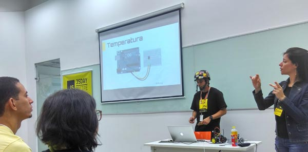
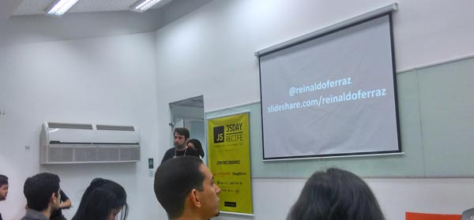
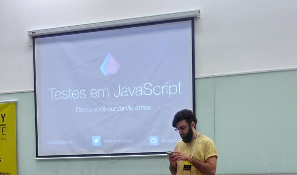
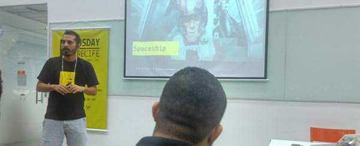
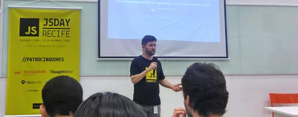
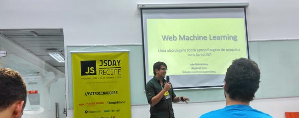
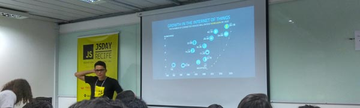
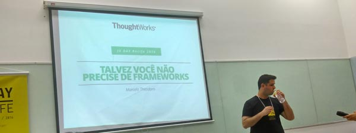

Aconteceu no último dia 26/11, o JSDay Recife, evento realizado pelo CESAR, reunindo a comunidade Javascript recifense através de talks e networking. Fechando minha ida em eventos nesse ano de 2016 (tentei ir no mínimo em três), primeiro fui ao 18º Encontro Locaweb, depois a Campus Party, que decidi nem escrever sobre, tamanha a decepção, e agora o JSDay.
O evento foi fantástico. Super organizado. Mas vou elencar os pontos positivos e negativos e destacar minha opinião sobre as palestras.
Pontos negativos
Quem me conhece diz que só vivo reclamando (não concordo), mas dessa vez não tive motivos. Fiz esforço pra tentar lembrar de alguma situação, mas realmente não consigo encontrar. Nem forçando a barra. A única coisa ruim é a localização. Fica numa área muito esquisita. O CESAR é localizado num dos pontos turísticos mais famosos da cidade, e se esse lugar é abandonado não se pode criticar a instituição.
Pontos positivos
Bem, chegamos a parte boa. É bom sair de um lugar com a sensação de que seu dinheiro foi muito bem investido.
- Inclusão: Tivemos especialistas em linguagem de sinais pra passar o conteúdo às pessoas com problemas de audição. Sensacional!
- Local: Embora estivesse lotado, e os corredores são um pouco apertados, o espaço disponibilizado foi bastante confortável e a mobilidade das pessoas em momento nenhum ficou comprometido. Mas o evento vem crescendo e acredito que ano que vem será maior. Tem que se estudar pra nesse caso, não ficar muito lotado.
- Organização: Tudo foi muito organizado. Sem filas, a entrada/ saída foi tranquila, o coffee também, banheiros limpos, pessoal atencioso.
- Palestras: pelo menos pra mim, foi de alto nível. Não deu para acompanhar todas, até porque tivemos palestras simultâneas e não dá pra estar em dois locais ao mesmo tempo. Vou falar um pouco mais abaixo.
- Brindes: Brinde é brinde. Quem ficou até o final ainda participou de sorteios. Como sempre não ganhei nada :(
- Coffee break: Foi fantástico. Tapioca, sanduiches, achocolatados, refrigerantes, água, café a vontade.
Palestras
O post tá ficando extenso, vou só passar uma linha sobre as palestras.
JavaScript Robotics for Everyone

Felipe de Albuquerque Front-end Engineer, C.E.S.A.R
Mostrou como é simples controlar robôs e drones com JavaScript. Falou sobre a plataforma IoT Johnny-five.io, comunidade nodebots e embora tenha tido pouco tempo de talk (cerca de 10 minutos) atiçou e muito minha curiosidade. Algo que vou procurar estudar com certeza.
HTML Acessível: Um guia rápido para melhorar a acessibilidade das suas páginas Web

Reinaldo Ferraz Web Development Specialist, W3C / Ceweb.br
Outro que sempre traz conteúdo e relevante. É um tapa na cara toda vez que assisto o Reinaldo palestrar. Tenho que melhorar e muito meu estudo e prática sobre acessibilidade.
Testes em JS como você nunca viu antes

Lucas F. Costa FullStack Developer, MyTapp
Palestra muito boa sobre testes, eu que não conhecia nada do assunto fiquei entusiasmado e é algo que tenho que colocar no meu radar de estudos. O Lucas parecia nervoso no início, mas depois se soltou e conseguiu passar muito bem o conteúdo.
Programação Funcional com Acarajé e Dendê

Jonata Weber Software Engineer, WeberSchool
Mostrou de forma muito simples (com uma receita de acarajé!!!) conceitos sobre programação funcional. Sensacional a abordagem e a simplicidade como foi passado o conteúdo. Um dev que vou procurar acompanhar.
Progressive Web Apps: e o JavaScript com isso?

Jose Marcilio Software Engineer, C.E.S.A.R
Palestra que eu estava mais ansioso pra ver. Estou me preparando pra entrar de cabeça em Progressive web apps e to tentando agora absorver todo conceito sobre ele que puder. Conteúdo completo, bem tranquilo de absorver.
Web Machine Learning - Desbravando a aprendizagem de máquina com JavaScript

João Gabriel Lima PhD Cadidate em computação aplicada e inteligência computacional, Epitrack
Falou sobre inteligência artificial em aplicações web. Conteúdo interessante, mas que não me interessa no momento. Mas mesmo assim serviu pra expandir a mente e mostrar um pouco do poder do Javascript, pra quem ainda duvida dele.
Explore o mundo do IoT com o MATRIX

Diego Leite Software Developer, AdMobilize
Única talk da outra trilha (essa foi da YELLOW, todas as outras foram BLACK) que assisti em outra sala. Confesso que fui assistir essa palestra porque as cadeiras eram mais confortáveis, e acabou sendo a melhor coisa que fiz no evento. Palestra mais divertida e que apresentou o melhor produto. Quem puder conheça sobre Matrix. Vale muito a pena.
Talvez você não precise de um framework

Marcelo Theodoro Senior Consultant, ThoughtWorks
Essa palestra foi a mais fraca. Não que tenha sido ruim, achei o nível das palestras e dos palestrantes bastante alto. Mas essa ficou devendo. O maior problema foi a forma como foi passada. O Marcelo parecia não acreditar muito no que ele tentava passar. Quando vi a proposta do tema, achei que ele defenderia com mais vontade. Mesmo assim o conteúdo passado serviu pra quebrar paradigmas e suscitar reflexões e debates, te fazendo pensar.
Conclusões e expectativas
O evento foi sensacional, parabéns ao Felipe e aos organizadores. O CESAR está de parabéns por oferecer conteúdo bacana, de alto nível, por um preço acessível. Que venha o próximo ano.
Always bet on JS \m/